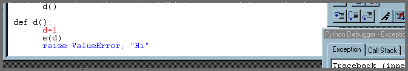

Pythonwin Debugger Tutorial¶
Pythonwin Debugger Tutorial¶
Existing document
\Pythonwin\doc\debugger\tutorial.html
Note
This debugger used to be known as the win32dbg package. Also, we have recently upgraded to a much better editor control. The screen shots in this tutorial do not reflect these recent changes. Although win32dbg will still work, you should substitute pywin.debugger for win32dbg in the screen-shots, and hopefully the new editor control will make the break-points etc even more obvious.
This tutorial shows how to debug a file provided with Pythonwin distribution. The module we will debug is called `fail.py, and is provided purely for demonstrating and testing the debugger. This file is located in the Pythonwin\pywin\debugger directory.
This document does not attempt to discuss general debugging concepts. It is assumed that you understand the concepts of Step In to a routine, Step Over a routine, call stack, break-point, etc.
When you have completed the tutorial, you should read the general debugger documentation.
In general, the user interface should be fairly intuitive. All toolbar items have status bar text and tool-tips, which will help determine their function.
Preparation for the tutorial¶
To prepare for the tutorial, ensure you have Pythonwin installed, then start either Pythonwin/Python, Windows Explorer, or an “MS-DOS” prompt.
Starting the Debugger¶
From Pythonwin or python:¶
At the interactive window, type:
>>> import pywin.debugger.fail<enter>
From Windows Explorer:¶
Navigate to the Pythonwin\pywin\debugger directory, and double-click on the file fail.py.
From the MS-DOS Prompt:¶
Change to the Pythonwin\pywin\debugger directory.
For Windows NT users, type:
fail.py<enter>
Or Windows 95/98 (sob - you would hope that 98 would have fixed some of 95s dumbness!)
<path to>\python fail.py
or
start fail.py
Using the Debugger¶
If all goes well, you should see the debugger appear in a full GUI frame, with a particular line in fail.py highlighted. Part of the screen should look something like:

Note
This screen capture is wrong. Hopefully, what you can see on your screen is better and more obvious than this old picture!
In this case, the Python program has executed until it hit the statement pywin.debugger.set_trace().
This statement is effectively a hard-coded break-point, which creates a debugger, and causes it to stop at the statement following the set_trace().
The Debugger is showing the blue line as the current line. This is the next statement to be executed.
Setting a Break-point¶
Our next step is to set a breakpoint somewhere inside the code that remains to be executed. As you can see, the Python program is about to call the function c(). Examining the source, we can see that c() calls d(). The first line of d() is a good spot!
To set a break-point, perform the following steps.
Select the
fail.pysource file (or more generally, you can open another source file, and set a break-point there).Scroll to the location where a breakpoint should be set, and ensure the carat (edit box cursor) is on the line.
Either: Select the Hand icon on the debugger toolbar. Or: Select the Breakpoints property page, and select the Add/Clear button.
The debugger should then look something like:
Note the current line is still colored blue, and the newly added break-point is colored red. You can also select the Breakpoints property-page and see the breakpoint listed there.
We are now ready to run the debugger.
Either: Select Go from one of the property-pages, or select the Run toolbar item.
The debugger should vanish briefly, then re-appear after hitting the breakpoint.
Note
The behaviour of the hiding can be changed, but with caveats - see the general debugger documentation for details on
GUI versus Non-GUI Issues).The debugger will show the break-point line in blue - there will be no visual indication the line is both a break-point, and the current line. As soon as the current line moves off this line, it will return to its break-point color.
Stepping through the code¶
Use the Step toolbar or dialog button to step through code. Stepping from the current location will step over the assignment of 1 to the local variable d. Continuing to step will step into the function e().
Examining the current context¶
Just to jump in, we should have a play with the property pages.
Use the Call Stack` page to see the current context. Double-clicking will change the current context, and change the highlight. Expand and collapse each entry to view locals and globals.
Use the Interactive page to view and change variables in the current context. For example, assuming that
d()is still the top call stack, entering d<enter> into the interactive page will print1. Almost any Python expression/statement can be executed here, from the current context. Use the Call Stack page to change the current context (i.e., make another stack entry blue), and notice how “d” is likely to evaluate to the functiond()(i.e., the interactive page has changed contexts).
Post-mortem diagnostics¶
The fail.py as distributed is setup to demonstrate “port-mortem” debugging - i.e., debugging after an exception has occurred.
To demonstrate post-mortem diagnostics, simply:
Click on the Run toolbar item or property page button
The debugger will again vanish, and re-appear looking something like:
Notice that there is now a new property page, titled “Exception”. This shows the traceback that Python would normally print if this exception was unhandled.
All other features of the debugger work as expected. You can view each call stacks local and globals, etc. However, you can not force Python to ignore, or otherwise alter the normal Python exception processing. (except, or course, by stopping the debugger)
OK - now jump to the general debugger documentation to get a more detailed picture.